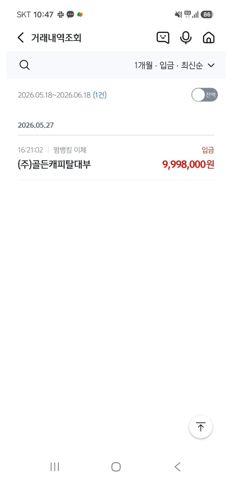

[개인회생자 대출] 기대출 5건 3800만원 과다하게 사용중에 1천만승인. 최규열 전무와의 대출후기
직장인(사무직) / 0년 3개월 / 연봉 4800 / 대부업 5건 3,800 / 현재 저축은행 및 대부업 모두 부결났었던 상태였습니다.
마지막으로 두군데만 더 해보자고 해서 대부업 두군데 신청하였고 총 1000만원 승인 났네요
두군데 대환들어가고, 미납 정리하고 생활비 일부 남았습니다.

안될거라고 생각했는데 최규열 전무님이 많이 도와주셔서 좋은 대출결과 나왔습니다 ㅠㅠ 덕분에 급한불 껐습니다.
감사합니다 :)
https://cafe.naver.com/cityman88/311597